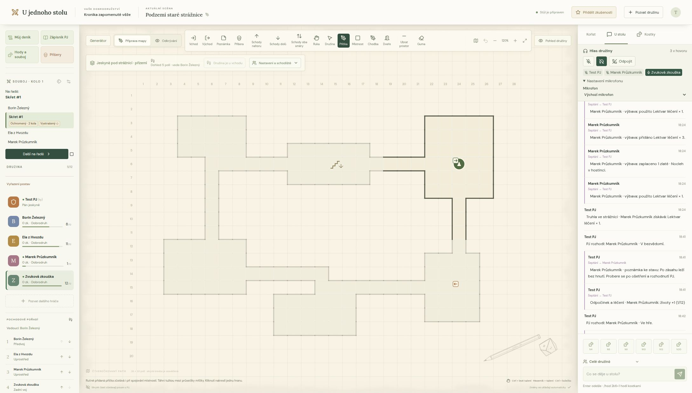
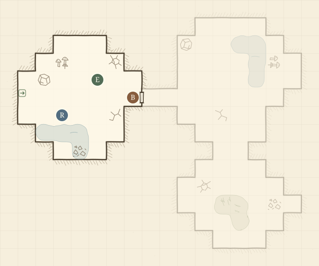
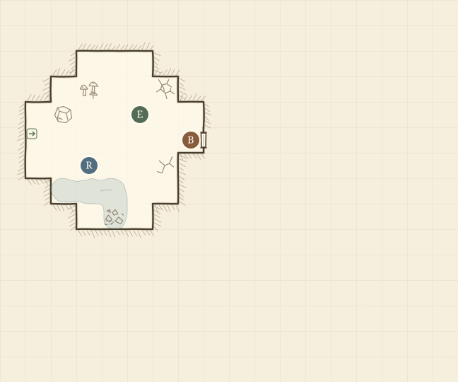

01 Před výpravou
Nakresli jeskyni
PJ načrtne místnosti, dveře a schody nebo si nechá připravit návrh dolu, hradu či jeskyně. Do mapy si uloží příšery, kořist i tajné poznámky.
Český online herní stůl
Čtverečkovaný papír, kostky a parta kamarádů. Pozvi družinu do prohlížeče a pokračujte v dobrodružství, i když vás dělí stovky kilometrů.

Proč jsme stůl udělali
Kdysi stačil čtverečkovaný sešit, pár kostek a někdo, kdo se ujal Pána jeskyně. Dnes je těžší sejít se na jednom místě. A tak vznikl nápad vrátit se k Dračímu doupěti 1.5 a zkusit si zas zahrát po večerech, i když každý sedí jinde.
Vedle nástrojů jako Roll20 a Foundry má U jednoho stolu užší cíl. Dát dávným kamarádům jednoduchý stůl, který si jeden z nich spustí u sebe doma. Herní data i zálohy zůstanou na jeho stroji.
PJ: „Za dveřmi je slyšet kapání. Pochodeň už skoro zhasíná.“
Hráč: „Posvítím do škvíry. Vidím tam něco?“
PJ: „Ve světle se mihne špička boty. Pak zase tma.“
Jak vypadá jeden večer
01 Před výpravou
PJ načrtne místnosti, dveře a schody nebo si nechá připravit návrh dolu, hradu či jeskyně. Do mapy si uloží příšery, kořist i tajné poznámky.
02 V podzemí
Vedoucí ukáže, kudy se jde. Za rohem se odkryje další část mapy a známá místa za družinou zešednou. Při vstupu se může rozvinout popis připravený PJ.
03 U stolu
Družina hodí na zkoušku nebo útok. PJ rozhodne o následcích a hráči si rozdělí nález. Deníky i objevená mapa počkají na další večer.
Družina stojí před zavřenými dveřmi. PJ vidí i chodbu a místnosti za nimi. Hráči zatím znají jen vstupní síň.


Vlastní stůl
Server instaluje jen jeden člověk z družiny. Ostatním stačí prohlížeč a pozvánka.
Správce spustí stůl na vlastním počítači s Linuxem a Dockerem. Hráči otevřou HTTPS adresu stolu, třeba po domácí síti nebo přes vlastní VPN. Kampaň se ukládá u vás.